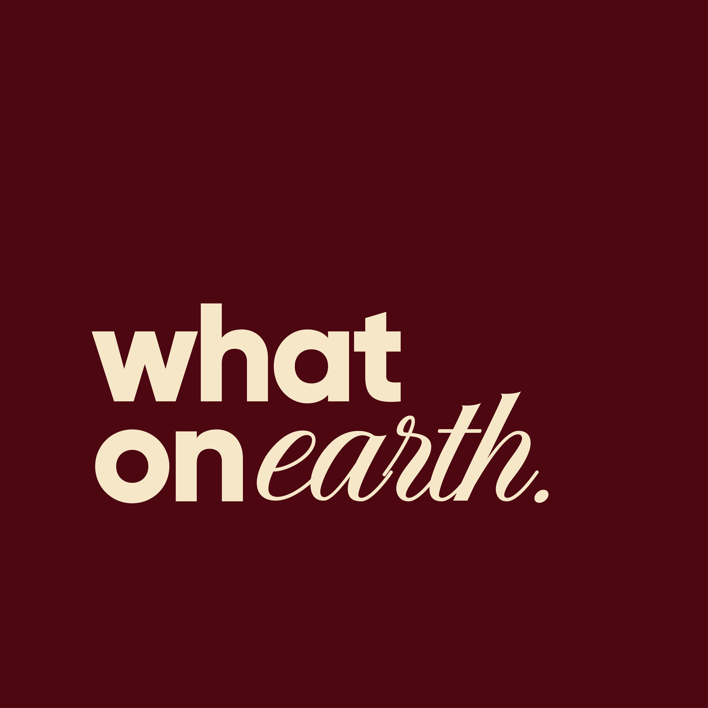

Brand Strategy
Serveware cut from Egyptian stone. Made in Cairo, made to be used. The argument, the range, and the sequence behind the brand.
Said flat, with a period. Not a question — a statement.
The sound a person makes when they turn something over in their hands and can't work out what it is.
what on earth
The material. Everything we make came out of the ground.
what on earth?
The reaction. Nobody guesses Galala correctly.
The period is astonishment with the volume turned down. We are not reverent and not solemn. We are curious, and we assume the customer is too.
Everything downstream — the voice, the photography, the way we write a product page — resolves back to this. If a decision makes the brand more solemn, it is probably the wrong decision.
As of 2024, Egypt was the fourth-largest exporter of marble building stone in the world, behind China, Turkey and Italy. The industry is not some struggling backwater — the Shaq al-Thu'ban cluster alone produces 90 per cent of the country's marble and accounts for 85 per cent of its marble and granite exports. It is a forty-minute drive from Maadi.
{{ st.fig }}
{{ st.label }}
And almost all of it becomes floors.
Galala off the plateau above Ain Sokhna. Silvia out of the Eastern Desert. Sunny from Upper Egypt. Granite from the Aswan quarries the obelisks came from. Cut, polished, crated, and sold by the square metre — laid down as cladding and flooring in buildings whose owners will never know where the stone came from.
The gap isn't processing. Egypt processes at world scale. The gap is design.
Egypt sells some of the best stone on the planet by the square metre. We think some of it should end up on a table, with an Egyptian name on the bottom.
That argument works identically in Cairo and in Copenhagen. It is the whole brand.
what on earth. makes serveware from Egyptian stone — designed objects from a country that mostly sells its stone by the square metre.
Cairo first, then export markets that already buy the raw material.
The object sits on a table. Someone picks it up because it's heavier than it looks, or because the vein runs somewhere unexpected, and asks what it is. That moment is the product. Everything else — the material, the finish, the weight — exists to produce it.
Five tests, applied to every piece before production
Test five is not negotiable. See §6.
The problem that shapes the entire range
Marble, limestone, travertine and onyx are composed primarily of calcium carbonate, which reacts with any acidic substance — lemon juice, wine, vinegar, tomato, soft drinks, and many household cleaners. The acid dissolves a microscopic layer and leaves a dull etch mark, and the reaction is permanent without restoration.
The obvious fix does not work. No sealer prevents etching — sealers fill pores to block absorption, but etching is a chemical reaction on the surface itself. And our most beautiful stone is the most vulnerable: Galala is geologically a limestone, and limestone etches even more readily than marble because of its higher porosity.
Everyone in the category has hit this and buried it — Ferm Living tells buyers not to put liquids on marble; Verheyden tells buyers to remove liquids immediately and apply beeswax. Both handle it in fine print, after the sale. We handle it before the sale, in the product architecture.
The range splits by chemistry, not by aesthetics
{{ r.use }}
{{ r.egs }}
{{ r.material }}
{{ r.why }}
Honed, never polished.
Etching is a change in surface gloss; on a matte honed surface it is far less visible, and it is most prevalent on polished surfaces. This costs nothing.
Stated above the fold.
“This stone will mark where lemon touches it. If you want a board that won't, buy the granite one.” It converts our biggest weakness into proof of belief.
The granite range · acid-resistant
Egyptian granite spans reds, roses, blacks, greys, whites, greens and browns — roughly 98 named varieties, though most are renamed duplicates. Typical: water absorption 0.1–0.4%, density 2.6–2.7 g/cm³, Mohs 6–7. Five to sample first:
{{ g.tag }}
{{ g.name }}
{{ g.desc }}
Fabrication: fine grain beats coarse at small scale; granite is harder to work than marble, so expect higher cutting cost and tool wear; dark stone shows water spots and Cairo water is hard, so test before committing to black as the hero. Naming: the trade has no standard nomenclature — Red Aswan sells under nine names. Always confirm against a physical sample, never a name. Nobody owns the vocabulary; a brand that names these stones consistently does something the whole industry has failed to do.
The marble range · dry & display
{{ m.name }}
{{ m.abs }}
{{ m.desc }}
Olive wood · Phase 2
Egypt grows ~58 million olive trees but for fruit and oil, not wood — the carving chains are in Bethlehem, Tunisia and Crete. There's no comparable Egyptian craft chain; we'd build it. Gated behind a feasibility test. If any answer is no, launch on stone alone.
Clay · Phase 2
A Fayoum pottery school in Tunis Village has trained generations — 30+ workshops today. Caveat: they're known for hand-painted desert scenes, which collides with our no-pattern rule. Working with Fayoum means commissioning undecorated form and glaze.
Glass & copper · Phase 3
Souq al-Fustat sits on the site of Egypt's first Islamic capital — a historic centre for glass and ceramics, now a gallery-style market with hand-blown glass. A sourcing lead and, more immediately, a retail channel. Visit early.
Shaq al-Thu'ban, southeast Cairo. Stone arrives from the quarries of Ras Ghareb, Ain Sokhna, Minya, Gebel El Galala, the Red Sea and Aswan — with 1,858 firms competing for work. We never need to visit a quarry.
And the material should be offcuts.
In quarrying, about 51% of extracted material becomes solid waste — defective blocks, offcuts, and fine slurry. Shaq al-Thu'ban's waste is a documented environmental problem for neighbouring Zahraa El-Maadi and Wadi Degla. Our products are small — a serving board is a rounding error next to a floor order.
Lower cost
Material approaches zero from offcuts.
Circular story
We work with what the building industry discarded.
Unrepeatable
An offcut yields what it yields. “Nature creates, we refine” becomes literal.
Pick two or three workshops and build real relationships. 1,858 options means enormous choice and enormous variance. Sample obsessively before committing volume.
{{ w.t }}
{{ w.d }}
The test: does this sentence contain a fact, or only a feeling? At least one fact per paragraph — a place, a weight, a number, a name.
Yes
Cut from Galala, quarried on the plateau above Ain Sokhna. The stone runs cream to soft gold and no two boards break the same way. This one weighs 2.1 kg. Serve bread and dry mezze on it. Not lemon — see below.
No
Elevate your hosting experience with our luxurious handcrafted marble serving board.
Yes
Heavy, on purpose. It doesn't slide when you cut on it.
Rules: short sentences; name the place; give the number; say the flaw out loud; no exclamation marks. Put the technical data on the product page — water absorption 0.08% is a strange and wonderful thing to find in a cheese board listing, and it is precisely the what on earth reaction the name promises.
B2C — one customer at launch
The Cairo host, 28–45, who furnished their own apartment with care and has people over. They own the ceramics. They own nothing made of stone.
Reality check: urban inflation ran 14.3% in June 2026, interest rates near 19–20%. The entry tier has to be genuinely accessible or the funnel has no top.
B2B — three segments
Specialty coffee — the wedge. A café puts the object in front of hundreds of exactly our customer, daily, for years. Cairo has ~7,308 coffee shops and 107+ roasters. The café line must be granite. Get on the Egypt Coffee Festival and Coffee Summit lists.
Boutique hotels — where the revenue is. Larger orders, replenishment cycles. Egypt drew 5.6M tourists in Q1 2026, up 43.5%, on the GEM opening; the target is 21M for the year.
Interior designers & turnkey studios. One relationship, many projects.
Cultural retail — the fourth channel
The GEM draws ~15,000 people a day. Millions of high-spend cultural tourists are in Cairo looking for something Egyptian that isn't a resin scarab.
We sit in the gap between tourist bazaar and international design brand: contemporary objects, Egyptian stone, small enough to fly home, expensive enough to be a real gift. Targets — GEM concessions, museum shops, Souq al-Fustat, hotel retail in Zamalek / Garden City / Giza. This channel also solves the export problem: the customer carries it home and shipping cost is zero.
Brands named in Egyptian design press — Tumye, Khan Fokhar, Ellie, Kin Forms, Decobate, Knana, AMM Home, Nina Found Home, Madu, Anüt Cairo. Not one is doing contemporary stone serveware. The white space is verified.
Our Egyptianness lives in the material, never in the decoration.
“Egyptian” in this market is coded as motif — pattern, pharaonic reference, heritage storytelling. That lane is crowded and well executed; we should not enter it. Egyptian stone, contemporary form, no motif at all. It differentiates us locally and it travels — internationally, pharaonic motif reads as souvenir while material provenance reads as luxury.
Internationally
Michaël Verheyden — “uncommon objects for common rituals” — is the closest analogue. Audo Copenhagen runs Carrara, Calacatta Viola, Nero Marquina, Grey Kendzo. Ferm Living sits at the accessible end.
Note what they name: Carrara, Calacatta, Nero Marquina. Not one Egyptian stone — despite Egypt being the world's fourth-largest marble exporter. Introducing Galala, Silvia, Halayeb and Aswan into that vocabulary is a genuine, ownable position. It is the export argument in one sentence.
The ceiling
$2,400
Verheyden's average sold price on 1stdibs — up to $6,200 for a bowl. The market pays four figures for authorship and provenance, not material.
The floor
~$0
The stone in a 0.06 m² board costs a few dollars; from offcuts it approaches zero. Cost is dominated by EGP-denominated labour, pound at ~52–53. The favourable position to be in.
The ladder
{{ p.tier }}
{{ p.desc }}
Two mechanisms from day one: a price review every quarter (at 14% inflation, annual pricing is a slow bleed), and dual pricing — EGP for Cairo, USD/EUR for export and tourists, set independently rather than converted.
Dimensional weight raises international shipping by up to 25%, and shipping can eat 10–15% of ecommerce revenue. With the de minimis exemption gone, landed cost climbs further. One seller reported a $79 item costing $70 to ship to Canada. Export by parcel doesn't work — so the sequence is built around weight.
{{ q.when }}
{{ q.what }}
The hero piece is the granite board. Technically superior, it carries the obelisk story, and it produces the what on earth reaction more reliably than anything prettier.
The same stone as the obelisks. Now holds cheese.
Granite doesn't care what you put on it. Lemon, wine, vinegar, coffee — none of it marks this stone. The marble pieces are for bread. This one is for everything else.
Egypt is the fourth-largest exporter of marble in the world. 1,858 stone workshops in southeast Cairo, ~45,000 people, shipping to 118 countries. Almost all of it becomes floors.
Galala off the plateau near Ain Sokhna. Silvia out of the Eastern Desert. Sunny from Upper Egypt. Granite from the Aswan quarries the obelisks came from. All of it cut, polished, crated, sold by the square metre, laid down in buildings in countries that will never know where it came from.
We started what on earth. because that seemed like a strange way to treat some of the best stone on the planet. So we buy it here — often the offcuts, the pieces too small for a floor order — and cut them into things for the table.
Every piece is different, because an offcut is whatever it is. The vein doesn't run where you expect. The cream turns gold in one corner. We don't correct for it, and we tell you exactly which stone will mark and which won't.
Someone will pick it up at your table and ask what it is. That's rather the point.
Short form
Serveware cut from Egyptian stone. Made in Cairo. Made to be used.
Shortest — on the box
It came out of the ground about two hours from here.
Ranked by damage
{{ r.t }}
{{ r.d }}
{{ d.q }}
{{ d.a }}
Verified in research: Egypt's export rank; Shaq al-Thu'ban's scale and location; quarry locations; Galala's classification as limestone; acid-etching chemistry and sealer failure; granite acid-resistance; density and absorption; olive production; Tunis Village pottery; Cairo coffee counts; 2026 tourism and GEM figures; EGP and inflation; Verheyden price points; the ceramic competitive set; stone-waste percentages; shipping economics.
Your legwork, in priority order
Final. Supersedes all prior versions.